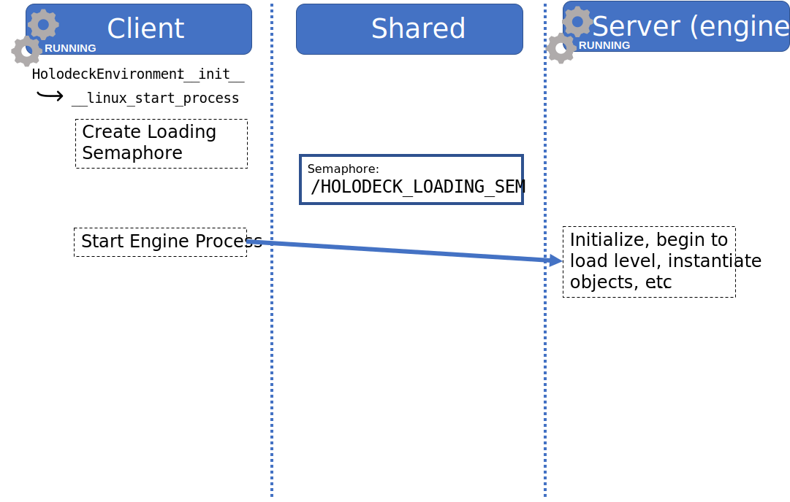
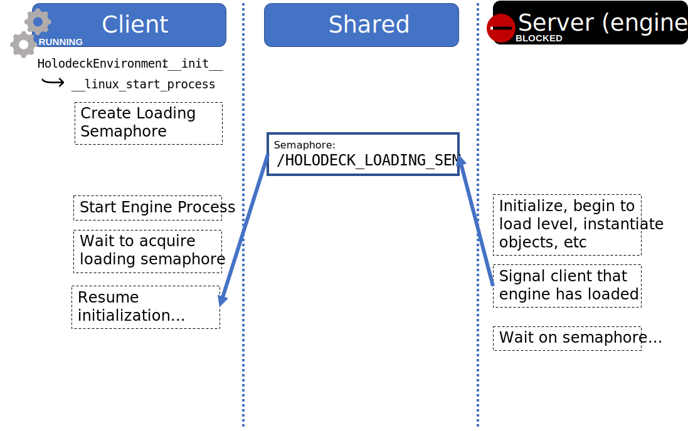
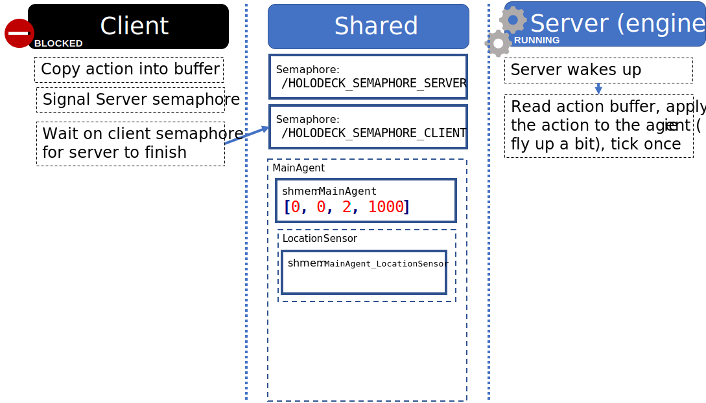
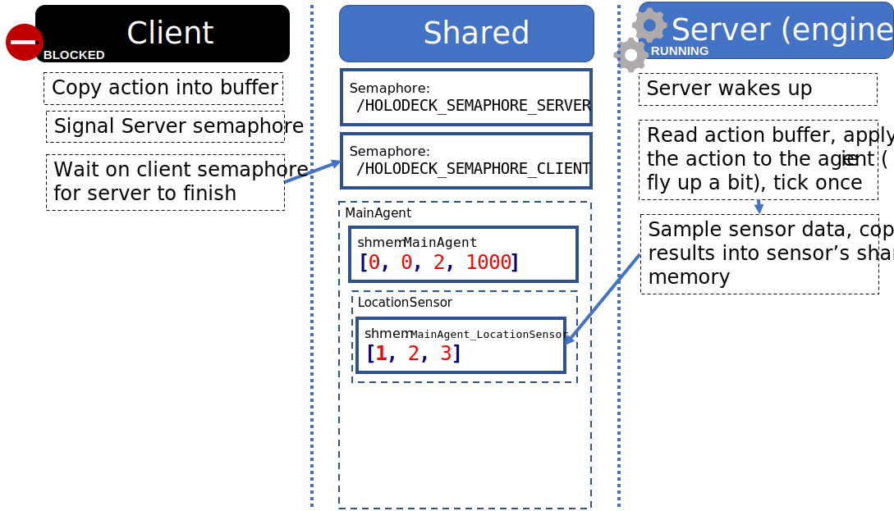
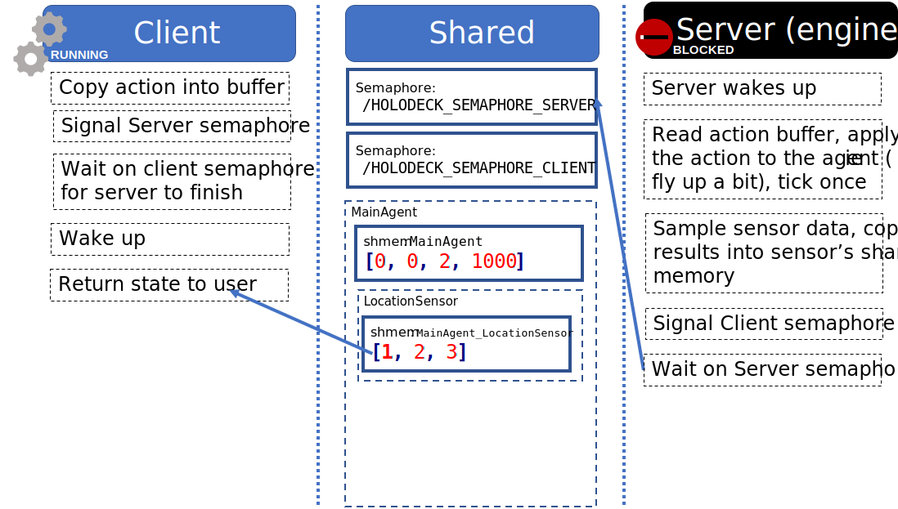

HoloOcean Client-Server Communication
(This article is based on the original Holodeck wiki page, located here.)
In this page we will discuss how the HoloOcean client and engine communicate.
Prerequisite Reading
Brush up on semaphores and shared memory.
The Two Halves of HoloOcean
HoloOcean is made up of two halves, the “client” and the “engine”.
Client
Known as the “Python side” or “client”
Starts the “server”
User interacts with this exclusively
Mostly moves information to and from the engine
Responsible for initializing the engine and training scenarios
Engine
Known as the “C++ side”, “engine”, or “server”
Unreal Engine project (
.uproject)Compiled binaries are downloaded and installed by the client
Requires Unreal Developer account to install Unreal Editor and build/package (see https://www.unrealengine.com/)
Simple Usage Example
In this walkthrough, we are going to explain how communication between the client and engine works through a simple example. Consider the following code that runs a HoloOcean simulation:
import holoocean
# (1). Start up the engine
env = holoocean.make("SimpleUnderwater-Hovering")
for i in range(10):
# Initialize the level and the main agent inside of it
env.reset()
# prepare a command to be sent to the main agent
command = [0, 0, 2, 1000]
for _ in range(1000):
# (2). Send the command to the agent, step the simulation, and return information from the engine
state = env.step(command)
Part 1: holoocean.make()
The holoocean.make() function is mostly a helper function to instantiate a
HoloOceanEnvironment object. .make() loads a configuration file and passes
the appropriate paramaters to the __init__() of HoloOceanEnvironment.
The __init__() function does three main things:
Starts a process on the engine and tells it the minimum it needs to load
Creates HoloOceanClient instance
Creates synchronization semaphores
Provides malloc() function for allocating shared memory on the client
Sensors, agents, etc. use this function
Instantiates agents and sensors, which use malloc() to allocate buffers
Creating Loading Semaphore
A “loading semaphore” is created by the client and signaled by the engine.
After starting the server process, the client will wait for the server to signal it so that the client knows the server has initialized.

Starting Subprocess
Next, the client will create the engine subprocess. It will pass a UUID on the engine’s command line that will be used to create unique semaphore names.
A Note on UUIDs
The names for semaphores and shared memory (eg /HOLODECK_LOADING_SEM) are
global for all processes in the entire operating system.
To avoid collisions between different instances of HoloOcean, holoocean.make()
generates a UUID for each environment it makes and sends it to the engine as
command line argument, eg
holodeck.exe --HolodeckUUID=8ac7059c-fb71-48fb-a0b1-a1ea8a4c6c10
The UUID is appended to semaphore/shared memory names to allow multiple instances to run, eg
/HOLODECK_LOADING_SEM8ac7059c-fb71-48fb-a0b1-a1ea8a4c6c10
If no --HolodeckUUID is provided, it defaults to ""
This proves very useful for debugging.
Waiting For Engine To Load
Now that the engine is initializing itself, the client waits on the
/HOLODECK_LOADING_SEM.
Engine Is Done Loading
Once the engine finishes loading, the engine will wait on another semaphore while the client does more stuff.
At this point, the client spawns agents, sensors, tasks, by sending a series of commands.
This isn’t covered in this page, but for our purposes, the important part is that each agent and sensor allocates shared memory buffers to allow communication between the engine and the client.
Main Synchronization Semaphores
At this point of the __init__() of HoloOceanEnvironment, it creates a
HoloOceanClient object, which makes two important synchronization semaphores.
These semaphores allow the engine and the client to work in lock-step and
alternate back and forth (see HolodeckServer.cpp / holooceanclient.py)
/HOLODECK_SEMAPHORE_SERVER
Known as
semaphoreThe engine waits on this semaphore while the client does whatever it wants to do
Blocks the main simulation loop!
The engine window will appear to be locked up while it is waiting on this semaphore
You can’t close the window, resize, or move it
/HOLODECK_SEMAPHORE_CLIENT
Known as
semaphore2The client waits on this semaphore while the engine simulates a tick
When the client is ready for the engine to simulate another tick, the client will signal
/HOLODECK_SEMAPHORE_SERVER
We will see how these semaphores are used below.
Part 2: .step()
Now that we have a running environment, how do we get data back and forth?
We will analyze what happens for
state = env.step([0, 0, 2, 1000])
to execute.
Note
The step() function calls the act() function followed by the tick() function for a
single agent.
1. Action for Agent
First, we copy the provided action ([0, 0, 2, 1000]) into the agent’s action
buffer:
2. Signal Server
Next, the client signals /HOLODECK_SEMAPHORE_SERVER and wakes the server up.
3. Client waits, server processes
Note
When the tick happens on the server, first all agents are updated and their respective tick functions are called, after which all sensors are updated and their tick functions are called.
4. Server samples sensor data, copies it into buffers
5. Wake up client

6. Server blocks and waits for client to signal it again
Remarks
Some interesting things to note.
Data copied into shared buffer persists. If an action is written, that same action will be executed until another action is written. Same with sensor data.
The engine’s default UUID is
"". This means that if you launch the engine from the editor or Visual Studio, you can attach to it with a Python client if you specify the UUID is""when creating theHoloOceanEnvironmentobject.